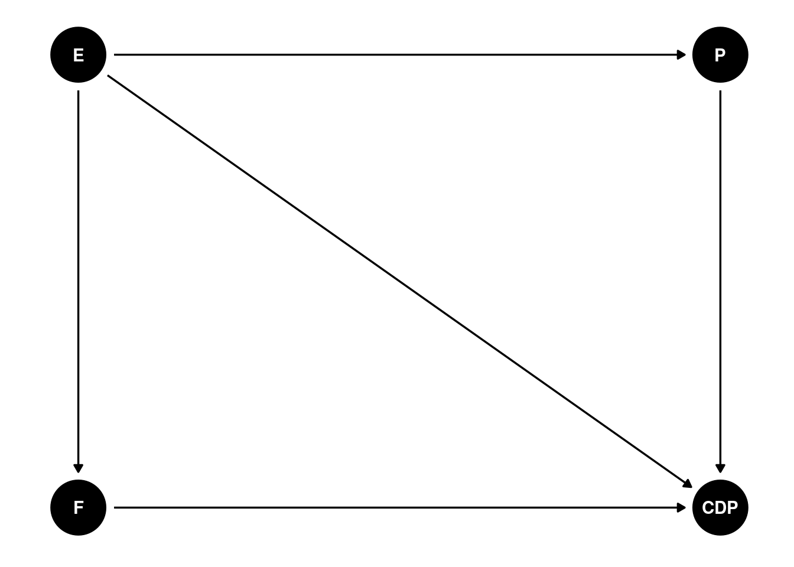
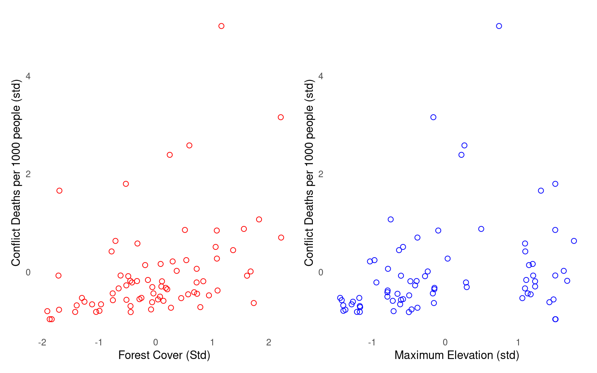
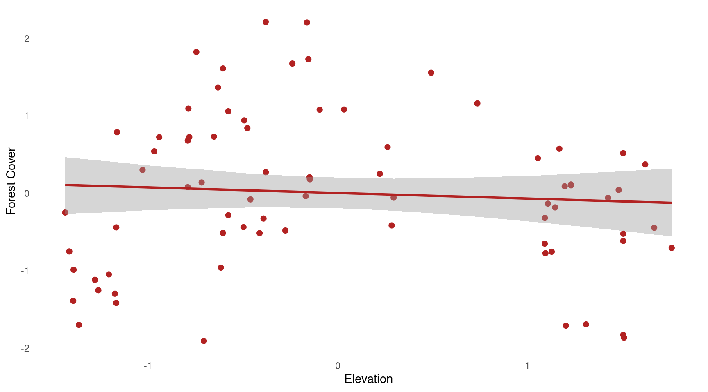

Can Forest Cover Work as an Intrument for Conflict Incidence?
Author
Suhishan Bhandari
Forested areas do seem plausible grounds for increased guerilla activity but can it provide exogenous variation in conflict deaths/incidences to look at the causal effect of conflict incidence on some other variable. This is my attempt to try and understand this through multiple regression, a small generative causal model, and some actual data on conflict incidence in the Nepal’s Maoist Insurgency/Civil War.
Introduction
I’ve been busy for the past week trying to write my final year undergraduate research paper on the labor market implications of Nepal’s Civil War. I had two rounds of Labour Force Datasets, and it seemed apt to use a DiD design to gather some form of a causal estimate for the impact of Nepalese Civil War (1996 - 2006). While my naivety at thinking two rounds of datasets were enough for a well-identified DiD is a different story (and how I perused the current DiD literature while barely understanding half of it), a major question that bugged me was, how do I classify people affected by conflict into treatment and control groups. For one, every district was affected (by affected I mean every district had some form of casualty as a result of the fight between Maoist Insurgents and the Government) and so it seemed implausible that there would be any people in the control group. I searched the literature on this and I stumbled upon a paper by Nidhiya Menon and Yana van der Meulen Rodgers (Menon and Van Der Meulen Rodgers 2015).
Their paper, which aimed to look at the impact of conflict on women’s employment, had used forest cover as an instrument to classify Nepal’s districts into treatment and control groups. The idea here being that high-forest regions are good grounds for higher conflict incidence, that Maoist Insurgents endogenously chose highly forested area for battle advantages, and as such, irrespective of other endogenous incidences of conflict like poverty and inequality, forest cover was assumed exogenous and this provided a valid instrument. For the bulk of this assumption and methodology, they cite and rely on Joshua D. Angrist and Adriana D. Kugler paper on exogenous changes in coca production and conflict incidence in Colombia (Angrist and Kugler, n.d.).
I had doubts regarding this approach for three reasons.
First, conflict intensity (as measured by conflict deaths) is clearly not a neat 1/0 binary treatment but a continuous count variable.
If we do assign treatment and control based on whether the district is highly forested (where the authors use the 75th percentile cut-off), given the use of instrument, the ATT estimated is going to be Local ATT, i.e. the effect of only the exogenously increased conflict deaths ( as a result of higher forest cover). There was no mention of this in the paper.
The validity of forest cover itself as instrument, especially regarding the exclusion criterion, because it seems plausible to me that highly forested areas are generally rural areas, maybe poorer areas, while districts with better development and urbanization likely have cleared forests to do so.
While this blog does not address all of these concerns ( and I end up employing a very different identification mechanism in my paper), here I try and replicate (albeit not entirely) their first stage regression if it does indeed hold up to some additional assumptions in the generative DAG.
The Generative Causal Model:
model_dag <-dagitty('dag{CI -> CD;E -> CI;E -> F;F -> CI;P -> CD;P -> CDP;CD -> CDP;E -> P;}')coordinates(model_dag) <-list(x =c(F =0, E =0.5, CI =1, CD =2, P =2.5, CDP =3),y =c(F =0, E =1, CI =0, CD =0, P =1, CDP =0 ))ggdag(model_dag)+theme_dag_blank()

This is a DAG I’ve drawn to see the implications of my model. F here represents the proportion of district that is covered by forests, E is the maximum elevation of a district, CI is the total conflict incidences that took place in the district between 1996 and 2006 A.D., CD is the best estimate of total conflict deaths between the 1996-2006, P is the population of Nepal for each district as per the 1991 Nepal Census, and CDP is Conflict Deaths per 1000 people/population
As outlined in the graph, Elevation affects the the proportion of a district’s forest area as well as conflict incidences, and F is assumed to affect conflict incidences. The causal effect that we are trying to gauge is the effect of F on CDP.
The only variable we need to adjust for is E (the maximum elevation).
The data used here is an amalgamation from (Do and Iyer 2010), Uppsala Conflict Data Program(UCDP)1 Dataset, and the population metrics from Nepal’s Census, the collection and cleaning of which I carried out for my own research. Given the generalizability of the DAG, readers can easily generate the datasets for themselves based on the relationships outlined in the DAG.
standardize <- rethinking::standardize # I use rethinking packages's standardize function to standardize the variables.d <- d %>%mutate(f =standardize(norm_forest),ci =standardize(incidents),e =standardize(elevation_max),cd =standardize(best_est), #best_est is the best estimate of the conflict deaths according to UCDPp =standardize(TotalPopn),cdp =standardize( (best_est/TotalPopn) *1000 )) %>%mutate(cd =ifelse(is.na(cd), 0, cd),cdp =ifelse(is.na(cdp), 0, cdp)# two districts which had no incidences # and therefore no deaths were classified NA)nd <- d %>%mutate(e_s2 = e^2, # elevation squared for use later on.f =ifelse(f >3, 2.14, f) ) # a district had 99% forest cover which is clearly implausible, so instead of removing it entirely from the dataset, I reassigned it to 80% i.e. 2.14 in standardized scale. There are better ways but for now this will do.
We want to look at the causal effect of Forest Cover (f) on overall Conflict Deaths. First let’s look at a scatterplot on the relationship between Forest Cover(f) and Conflict Deaths per 1000 people (CDP)
plot_1 <- d %>%ggplot(aes(x = f, y = cdp))+geom_point(size =2, color ="red", shape =1)+labs(x ="Forest Cover (Std)",y ="Conflict Deaths per 1000 people (std)" )plot_2 <- d %>%ggplot(aes(x = e, y = cdp))+geom_point(size =2, color ="blue", shape =1)+labs(x ="Maximum Elevation (std)",y ="Conflict Deaths per 1000 people (std)" )plot_1 | plot_2

The scatter-plot shows that there’s clearly a relationship between forest cover (f) and conflict deaths (cdp), as well the biasing path, the relationship between elevation and conflict deaths. Therefore, as per our DAG, the adjustment set to identify the causal effect is to control on Maximum Elevation (E). Let’s run two models, one linking f and cdp without elevation, and one with.
# Model 1, without elevationm1 <-brm(data = nd,family = gaussian, cdp ~1+ f,prior =c(prior(normal(0, 0.2), class = Intercept),prior(normal(0, 0.5), class = b) ),iter =2e3, warmup =1e3, chains =4, cores =8,file ="/home/suhishan/Documents/Small R projects/Conflict and Forest Cover Bayes/fits/m1")# Model 2, with elevationm2 <-brm(data = nd,family = gaussian, cdp ~1+ f + e,prior =c(prior(normal(0, 0.2), class = Intercept),prior(normal(0, 0.5), class = b) ),iter =2e3, warmup =1e3, chains =4, cores =8,file ="/home/suhishan/Documents/Small R projects/Conflict and Forest Cover Bayes/fits/m2")posterior_summary(m1)[1:3,1:4] %>%round(digits =3)
It turns out, the variable forest cover is robust to the inclusion of maximum elevation, with model 2 implying that a 1 standard deviation increase in forest cover is likely to result in 0.37 higher death rates per 1000 people. However, it must be carefully noted that this model specification implies and accounts only for a linear relationship between maximum elevation (e) and forest cover (f). This is a much overlooked fact in linear regression, whereby when controlling for potential biasing paths, the linear regression assumes a linear relationship between the predictors. However, if we do have different understanding of the relationship between the predictors, then the estimates for Forest Cover might still be biased.
A much overlooked fact about linear regression.
Controlling for elevation in our second model means that we
# Linear Model.m1.1<-update(m1, formula = f ~1+ e,newdata = nd)fitted_1.1<-fitted(m1.1) %>%data.frame() %>%bind_cols(nd)# Plot the linear relationship and how it seems implausible.plot_1.1<- nd %>%ggplot(aes(x = e, y = f))+geom_point(color ="firebrick", size =2)+geom_smooth(stat ="identity",data = fitted_1.1,aes(y = Estimate, ymax = Q97.5, ymin = Q2.5),color ="firebrick")# Non-Linear Modelm1.2<-update(m1,formula = f ~1+ e + e_s2,newdata = nd)fitted_1.2<-fitted(m1.2) %>%data.frame() %>%bind_cols(nd)plot_1.2<- nd %>%ggplot(aes(x = e, y = f))+geom_point(color ="firebrick",size =2)+geom_smooth(stat ="identity",data = fitted_1.2,aes(y = Estimate, ymax = Q97.5, ymin = Q2.5),color ="firebrick")
plot_1.1| plot_1.2

Residual plots.
# Residuals from the linear model:r_1 <-residuals(m1.1)nd$r_1 <- r_1[,1]m2.1<-update(m1, formula = cdp ~1+ r_1,newdata = nd)fitted_2.1<-fitted(m2.1) %>%data.frame() %>%bind_cols(nd)plot_2.1<- nd %>%ggplot(aes(x = r_1, y = cdp))+geom_point(color ="firebrick", size =2)+geom_smooth(stat ="identity",data = fitted_2.1,aes(y = Estimate, ymax = Q97.5, ymin = Q2.5),color ="firebrick")plot_2.1
#Residuals from the nonlinear modelr_2 <-residuals(m1.2)nd$r_2 <- r_2[,1]m2.2<-update(m1, formula = cdp ~1+ r_2,newdata = nd)fitted_2.2<-fitted(m2.2) %>%data.frame() %>%bind_cols(nd)plot_2.2<- nd %>%ggplot(aes(x = r_2, y = cdp))+geom_point(color ="firebrick", size =2)+geom_smooth(stat ="identity",data = fitted_2.2,aes(y = Estimate, ymax = Q97.5, ymin = Q2.5),color ="firebrick")
plot_2.1| plot_2.2
References
Angrist, Joshua D, and Adriana D Kugler. n.d. “RURAL WINDFALL OR A NEW RESOURCE CURSE? COCA, INCOME, AND CIVIL CONFLICT IN COLOMBIA.”
Do, Quy-Toan, and Lakshmi Iyer. 2010. “Geography, Poverty and Conflict in Nepal.”Journal of Peace Research 47 (6): 735–48. https://doi.org/10.1177/0022343310386175.
Menon, Nidhiya, and Yana Van Der Meulen Rodgers. 2015. “War and Women’s Work: Evidence from the Conflict in Nepal.”Journal of Conflict Resolution 59 (1): 51–73. https://doi.org/10.1177/0022002713498699.